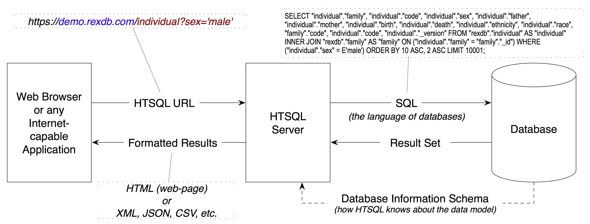

HTSQL -- a Query Language for Accidental Programmers
| Presenter: | Clark C. Evans, Prometheus Research |
|---|---|
| Date: | August 4, 2010 |
| Location: | Workantile, Ann Arbor, MI |
"Show me your flowcharts and conceal your tables, and I shall continue to be mystified. Show me your tables, and I won't usually need your flowcharts; they'll be obvious." -- Fred Brooks, Mythical Man Month (1974)
Quite simply, I only need ...
Business user:
"I *just* need a list of schools and the number of departments and programs for each?"
Developer:
"Got it! This one is easy -- give me 15 minutes."
Crickets:
*chrip* *chirp*
it's easy, no?
A junior developer, seasoned with SQL, will produce the obvious answer:
SELECT school.name,
count(department),
count(program)
FROM school
LEFT OUTER JOIN department
ON (department.school = school.code)
LEFT OUTER JOIN program
ON (program.school = school.code)
GROUP BY school.name
... that (luckily) also happens to be obviously incorrect.
SQL Guru to the Rescue!
Returning count of program and department by school turns out to not be so trivial:
SELECT school.name,
coalesce(correlated_department.count,0),
coalesce(correlated_program.count,0),
FROM school as school
LEFT OUTER JOIN (
SELECT school, COUNT(1) as count
FROM department GROUP BY school
) AS correlated_department
ON (correlated_department.school = school.code)
LEFT OUTER JOIN (
SELECT school, COUNT(1) as count
FROM program GROUP BY school
) AS correlated_program
ON (correlated_program.school = school.code)
But... it should be easy
This business user's request:
"I *just* need a list of schools and the number of departments and programs for each?"
really is trivial. How about an alternative (plot):
/school{name, count(department), count(program)}
This is HTSQL -- a new query language designed from the bottom up to be usable by accidental programmers.
Today's Talk
- Who am I?
- What is HTSQL?
- Why did we make it?
- How did it evolve?
- Show me in detail...
- How do I get it?
- Q&A
Who am I?
- I'm Clark Evans, principal at Prometheus Research, LLC.
- We serve medical researchers and other informatics projects
- Our customers are smart, data-oriented -- but not programmers
- Our primary HTSQL users are internal analysts (but some customers)
- Kyrylo Simonov (present) is the chief architect of HTSQL
What is HTSQL?
HTSQL is...

- a sophisticated graph-oriented query language
- a web access gateway for relational databases
- a extendable data processing/presentation framework
- a wicked smart tool for smart data heads
- 90% of expressive power, 10% of the complexity
HTSQL Processing Model
a bit more technical
- on startup, introspects table relationships
- relationships are edges in a graph model
- processor translates graph requests into SQL
- handles complex filters, projections and aggregates
- extensive, pluggable support for post-processing
Why did we make it?

We were dealing with users having extremely complex data -- traditional techniques for communication wasn't going to work.
A Shared Language

Our users, analysts, and developers now use a shared query language, while it's not a perfect understanding, it is much better.
Evolution of HTSQL
- started as tool to complement XSLT (2004)
- internal analysts became primary users (2005)
- query language grew to solve common requests
- end users started to use HTSQL directly! (2006)
- complete redesign with lessons learned (2006)
- large deployments, more refinements (2007)
- becomes framework for app. development (2008)
- rewrite for speed, fixing semantic issues (2009)
- porting HTSQL to commercial databases (2010)
Self-Service Reporting
- business analysts are 1st line of inquiry
- end-users sometimes tweak queries!
- developers help with heavy lifting, extending
- dba's help with data model changes
- easy to share (just email!) and format data
Developer Productivity
- queries are easy to grok, use and modify
- accidental join errors are impossible
- complex (impossible?) queries are feasible
- processing framework is extensible
- smaller inbox due to self-service for analysts
- expose VIEWs to HTSQL for 5% problems
HTSQL in 5 Minutes
Let's assume we have a data model, with schools, departments, programs and courses. Here it is:
+--------------------+ +---------------------+
| DEPARTMENT | | SCHOOL |
+--------------------+ +---------------------+
| code PK |--\ /---| code PK |----\
| school NN,FK |>-|------/ | name NN,UK | |
| name NN,UK | | . +---------------------+ |
+--------------------+ | . . |
. | departments . |
a department . | belong to . |
offers one . | exactly one a school |
or more course | school administers one |
| or more programs |
+--------------------+ | |
| COURSE | | +---------------------+ |
+--------------------+ | | PROGRAM | |
| department FK,PK1 |>-/ +---------------------+ |
| number PK2 | | school PK1,FK |>---/
| title NN | | code PK2 |
| credits NN | | title NN |
| description | | degree CK |
+--------------------+ +---------------------+
#1 - Selecting Data
- curly brackets are selectors
- postfix operators are sorting (+/-)
- use as to rename columns for presentation
An example (E1):
/course{department as 'Dept Code'+, number as 'No.',
credits-, title}
#2 - Linking Data
- we use period to signify a link, or join
- multiple levels of linking is possible
- use curly brackets for nested links
- wildcard * pulls all columns from a table
An example (E2):
/course{department{school.name, name}, * }
#3 - Filtering Data
- the question mark ? indicates filter
- single-quote literal strings
- full predicate algebra
- pluggable function support
For example (E3):
/course{department, number, title}?
credits<3&department.school='ns'
#4 - Aggregating Data
- one-to-many links are "plural"
- all plural links require aggregates
- nested aggregates are possible
An example (E4):
/school{code, avg(department.count(course))}
#5 - Projections & Segments
- projections build new relations
- similar to group by / distinct
- use caret (^) to project
- use / to relate data sets
An example (E5):
/program{degree^, count()}/student
How do I get it?
- free of charge for PostgreSQL, MySQL, etc.
- open source code, open community
- commercial license for Oracle, Microsoft SQL, etc.
- commercial addons for graphing, etc.
- we'd love to hear from you
Releases
- We sell commercial HTSQL 1.0 of course ;)
- We have HTSQL 1.0 available on bitbucket
- We are actively developing HTSQL 2.0
There are a few syntax changes (mostly with regard to commands) that we'll be changing in HTSQL 2.0.
Q&A
Please visit our community site, http://htsql.org, our commercial site http://htsql.com, or chat with Clark or Kyrylo here in Ann Arbor. We are best found at #htsql on freenode.
Generous support for HTSQL was provided by Prometheus Research, LLC and The Simons Foundation. This material is also based upon work supported by the National Science Foundation under Grant #0944460.